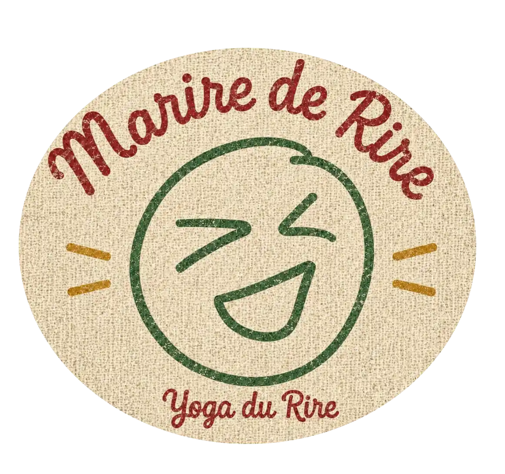
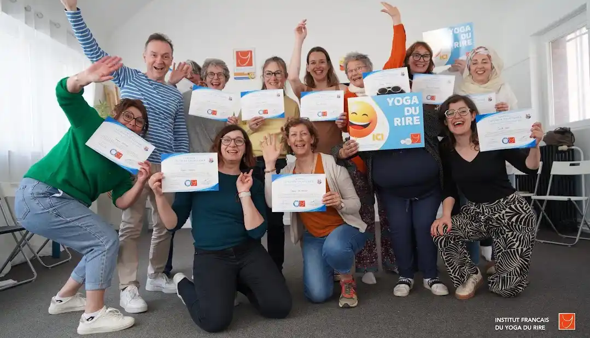
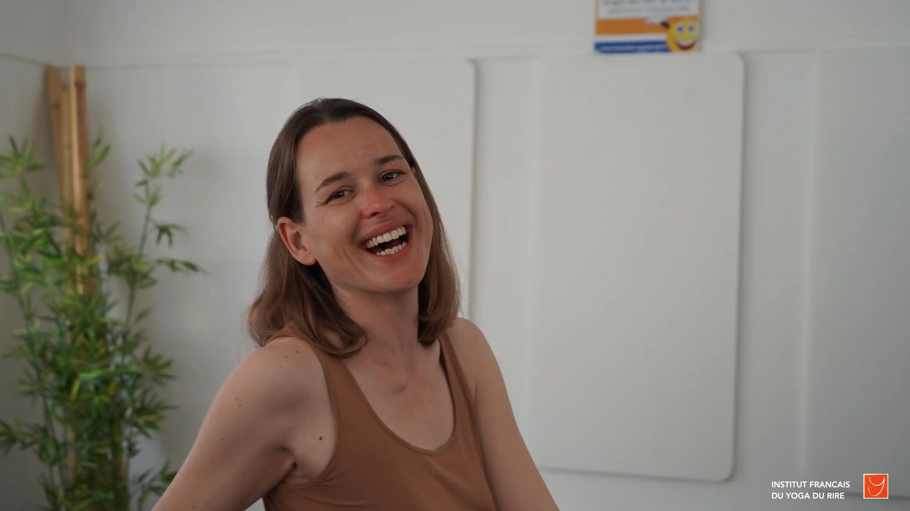
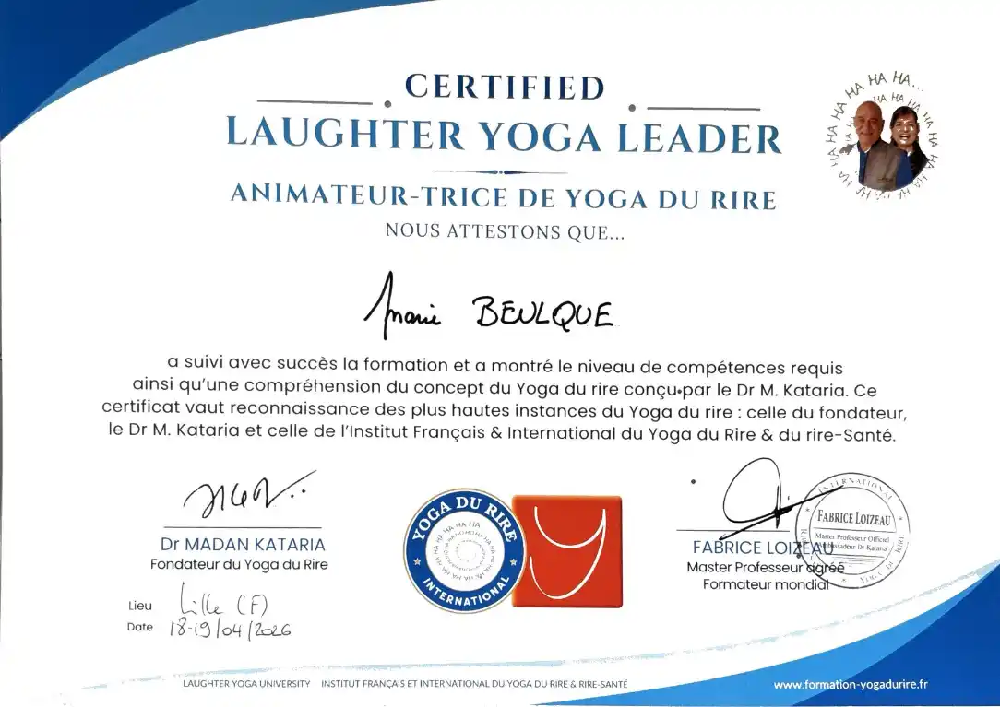

Qu'est-ce que le Yoga du Rire ?
Les Bienfaits
Qui Suis-Je ?
Les Séances
Contact
Qu'est-ce que le Yoga du Rire ?
Le Yoga du Rire est une activité de bien-être qui combine des rires, des exercices de respiration profonde et des étirements doux.
C'est facile, simple est accessible à toutes et à tous dès la première fois, et ne nécessite aucune compétence particulière.
La pratique de l'activité apporte des bienfaits pour la santé physique et mentale. La méthode a été créée en 1995 en Inde par le Docteur Kataria.
Aujourd'hui, le Yoga du Rire se développe et est présent dans 120 pays.
"Le Yoga du Rire n'est pas une théorie, c'est une pratique." Dr Kataria
Envie d'apporter du rire à votre corps, de vous remplir de positif, de bonne humeur et de vitalité ? Rejoignez les séances.
C'est facile, simple est accessible à toutes et à tous dès la première fois, et ne nécessite aucune compétence particulière.
La pratique de l'activité apporte des bienfaits pour la santé physique et mentale. La méthode a été créée en 1995 en Inde par le Docteur Kataria.
Aujourd'hui, le Yoga du Rire se développe et est présent dans 120 pays.
"Le Yoga du Rire n'est pas une théorie, c'est une pratique." Dr Kataria
Envie d'apporter du rire à votre corps, de vous remplir de positif, de bonne humeur et de vitalité ? Rejoignez les séances.

Des études scientifiques ont montré que le rire n'apporte de réel bienfaits qu'à partir de 10 minutes par jour de pratique continue. Or, cela n'est que peu compatible avec notre vie actuelle. De plus, les occasions de rire dans le quotidien viennent de l'extérieur. L'information passe par le cerveau, cela fait intervenir le mental. Dans le Yoga du Rire, le rire vient du corps, le mental n'intervient pas. Cela permet de mettre de côté les ruminations du mental.
Le Yoga du Rire est basé sur le principe que le corps ne fait pas de distinction entre le rire simulé et le rire spontané et les effets positifs sur le corps sont les mêmes.
De plus, bien que le rire soit simulé au départ, il devient rapidement spontané grâce à l'effet de groupe.
Le Yoga du Rire est basé sur le principe que le corps ne fait pas de distinction entre le rire simulé et le rire spontané et les effets positifs sur le corps sont les mêmes.
De plus, bien que le rire soit simulé au départ, il devient rapidement spontané grâce à l'effet de groupe.
Les bienfaits
Le Yoga du Rire offre de nombreux bienfaits pour la santé physique et mentale.
Une minute de rire représente l'équivalent de 3 minutes d'exercice physique intensif.
"Le rire mobilise la plupart des muscles, depuis la tête et le visage jusqu'aux membres en passant par le diaphragme et les muscles abdominaux. Il constitue un véritable jogging stationnaire dont les effets sont comparables à ceux d'un exercice musculaire bien conduit." Dr Schaller
Rire est un exercice respiratoire où l'expiration est plus longue que l'inspiration, ce qui permet de renouveler l'air des poumons. Cela engendre une meilleure oxygénation cérébrale et corporelle.
Une minute de rire représente l'équivalent de 3 minutes d'exercice physique intensif.
"Le rire mobilise la plupart des muscles, depuis la tête et le visage jusqu'aux membres en passant par le diaphragme et les muscles abdominaux. Il constitue un véritable jogging stationnaire dont les effets sont comparables à ceux d'un exercice musculaire bien conduit." Dr Schaller
Rire est un exercice respiratoire où l'expiration est plus longue que l'inspiration, ce qui permet de renouveler l'air des poumons. Cela engendre une meilleure oxygénation cérébrale et corporelle.
| Les bénéfices sur l'organisme: | Les bénéfices psychologiques: |
|---|---|
| Améliore la qualité du sommeil | Diminue le stress et l'anxiété |
| Soulage les tensions (musculaires) | Aide au lacher prise |
| Soulage les douleurs | Sensation de bien-être |
| Améliore la digestion | Diminue les effets des émotions incomfortables (stress, peur, colère...) |
| Renforce le système immunitaure et la vitalité | Augmente la confiance en soi |
| Régule le mauvais choléstérol | Améliore la concentration |
La Fédération Française de Cardiologie recommande la pratique car elle fortifierait le muscle cardiaque.
Le Yoga du rire peut être adapté individuellement en fonction de l'âge.
| Les contre-indications | |
|---|---|
| Incontinence sévère | Saignements répétés d'hémorroïdes |
| Tout type de hernie | Toux persistante avec symptômes aïgus |
| Epilepsie | Sévère mal de dos |
| Glaucome sévère | Asthme sévère |
| Toute maladie contagieuse | 3 mois après intervention chirugicale |
Qui suis-je ?
Je m'appelle Marie et je suis animatrice de Yoga du Rire dans le secteur de Gournay-en-Bray, en Seine-Maritime (76).

J'ai été formée par l'Institut Français et International du Yoga du Rire et Rire-Santé, par Monsieur Loiseau, proche collaborateur du Docteur Kataria.
Convaincue par la méthode, j'ai à cœur de transmettre les bienfaits du Yoga du Rire à travers des séances ludiques et accessibles à tous.
Convaincue par la méthode, j'ai à cœur de transmettre les bienfaits du Yoga du Rire à travers des séances ludiques et accessibles à tous.

Séance
Déroulement d'une séance
Les séances en groupe durent une heure et se déroulent selon trois grandes étapes. D'abord un éveil corporel, suivi des rires et pour finir une méditation du rire.
Horaires et tarifs
A partir de Septembre 2026 à l'Atelier à Gournay-en-Bray:
Le lundi de 18h à 19h
Le samedi de 14h à 15h
(Hors vacances scolaires)
Le samedi de 14h à 15h
(Hors vacances scolaires)
Première séance découverte en don libre
La séance : 12€
Abonnement trimestriel : 110 €
Abonnement annuel : 290 €
La séance : 12€
Abonnement trimestriel : 110 €
Abonnement annuel : 290 €
En entreprise:
Me contacter pour devis.